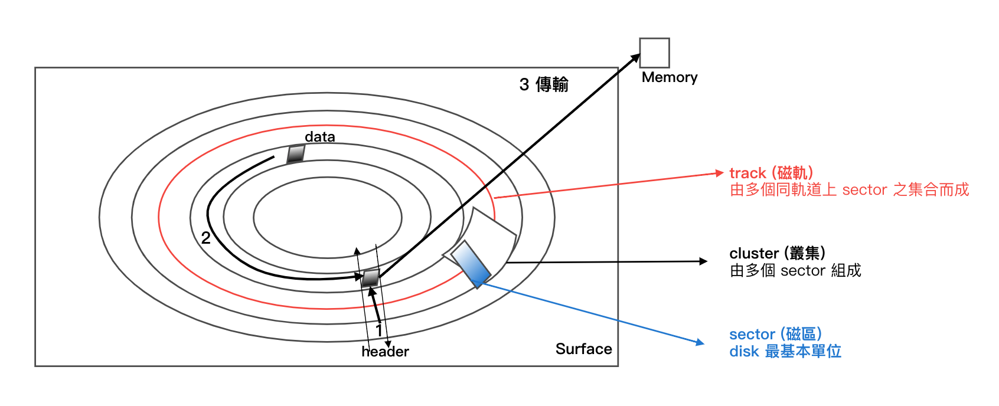
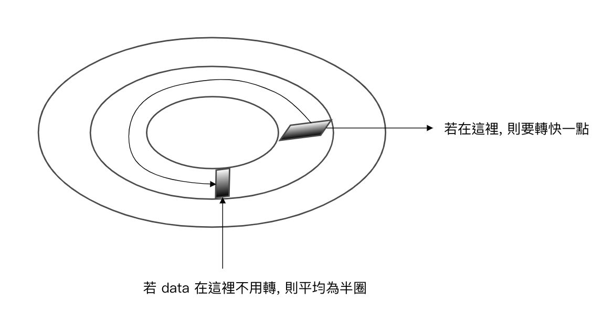
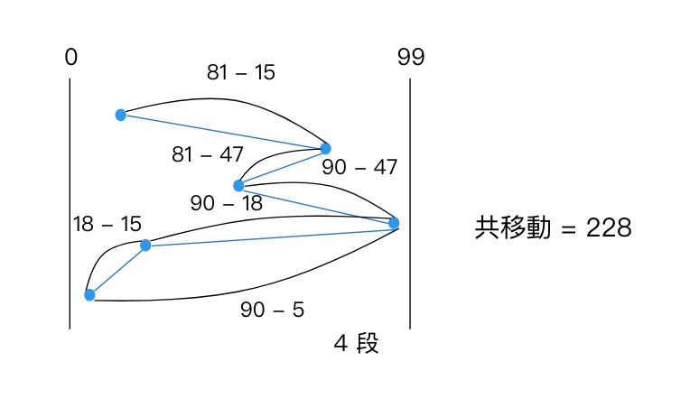
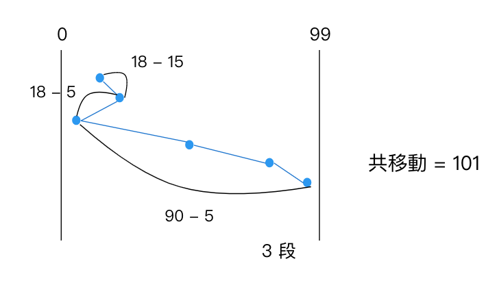
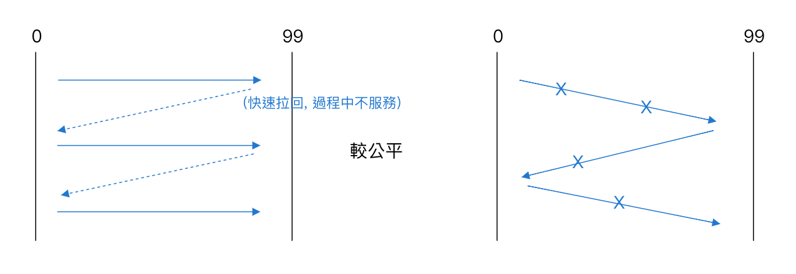
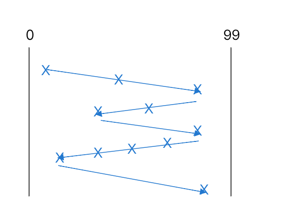
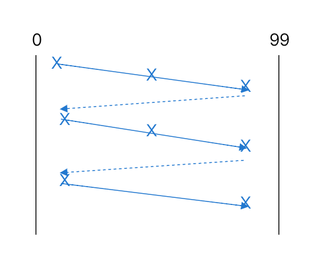

3.9 磁碟管理 (Disk Management)
目錄
- Free space management
- Link list
- Combination
- Counting
- Allocation Method (配置方法)
- 連續性配置 (contiguous allocation)
- 鏈結式配置 (linked allocation)
- FAT (file allocation table)
- 索引配置 (index allocation)
- i-node
- Disk structure
- Disk access time
- Disk scheduling
- FCFS
- SSTF
- SCAN
- C-SCAN
- LOOK
- C-LOOK
- 補充
- RAID
- RAID 的種類
- RAID1
- RAID0+1
- RAID2
- RAID3 vs RAID4
- RAID5
- RAID6
- Summary
Disk structure
- 圖：
- track 的水平集合 => surface (磁面)
- track 的垂直集合 => cylinder (磁柱) 圓柱體
- 順序 小 -> 大 => sector < cluster < track < {surface, cylinder}
- Ex: cylinder = 10, tracks = 20
- each track has 320 sector
- each sector 的 size = 512 bytes
What's the disk total size?
Sol:
10 * 20 * 320 * 512 bytes
= 32000 KB
約等於 32 MB
Disk access time
-
由下列組成：
- Seek time 搜尋時間：將 Header (讀寫頭) 移到指定的 Track 上方 (最耗時)
- Rotation time 旋轉時間 (Latency 延遲)：將 data 轉到 Header 的下方 (耗時 中等)
- Transfer time 傳輸時間：正式由 Header 讀取 data 做 disk <-> Memory 傳輸 (耗時 小)
-
Ex: seek time 平均需 8ms, 而 disk 為 7200RPM(轉), 問平均 disk access time = ?
RPM = Rotate Per Minute: 7200/60 = 120/sec Sol:
seek time + rotate (平均) = 8ms + 1/120 sec * 1/2 = 8ms + 1/240 sec

Disk Scheduling
- Def: 指當有多個 access request, 在不同的 disk 之上, 則 Header 之移動服務順序為何
- 策略採 "Disk Scheduling algorithm"
- FCFS (FIFO) (First Come First Service)
- Ex: track 0~99, header = 15, access request - 81, 47, 90, 18, 5
Sol: 
- Ex: track 0~99, header = 15, access request - 81, 47, 90, 18, 5
- SSTF (Shortest Seek Time First)(不見得為最佳解)
- Ex: 
- SCAN (掃描法): 來回於兩端移動, 遇到 access request 即停下來服務之
- C-SCAN => 同 SCAN, 但 "單向服務"
- 圖：
- LOOK: 跟 SCAN 相似, 但不見得碰底, 沒服務則往回走
- 較有效率, 但也就較複雜, 需額外空間處理
- 圖：
- C-LOOK: 同 LOOK, 但 "單向服務"
- 圖：
- FCFS (FIFO) (First Come First Service)
補充
| 說明 | 傳統 (IDE, SCSI, SATA) | 固態硬體 SSD(Solid State Drive) |
|---|---|---|
| 比較 1 | Header 採機械式移動 => 慢 (seek 是 sequential) | 採用 "電子式" => 快 (random access) |
| 比較 2 | 抗震性差 | 抗震性佳 => 適用於行動裝置上 |
| 比較 3 | 成本低 | 成本高 |
| 比較 4 | 容量高 | 容量小 |